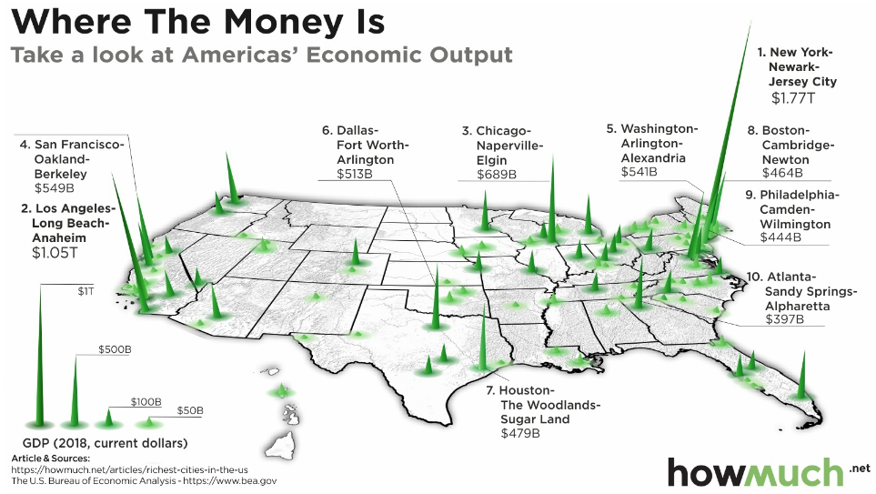
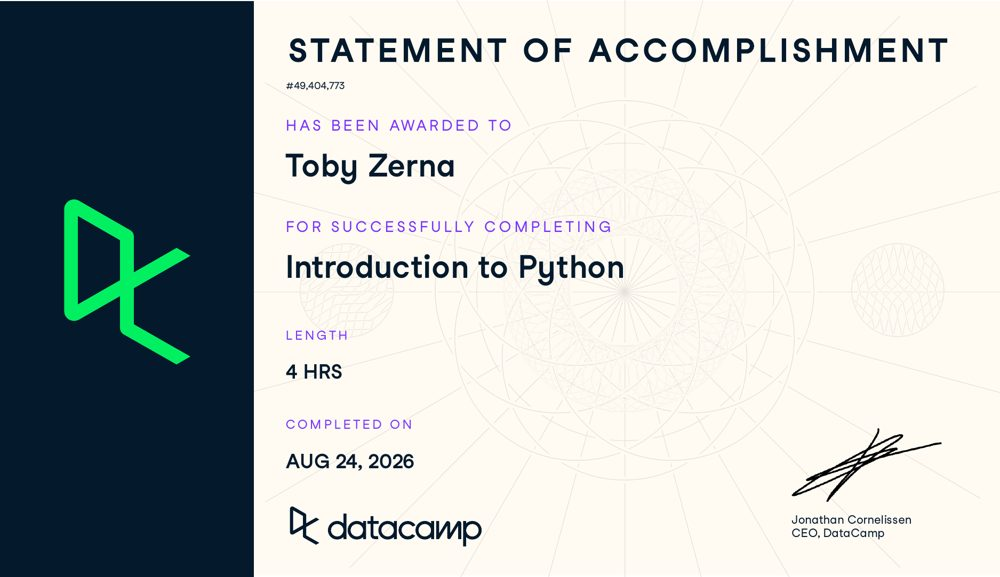
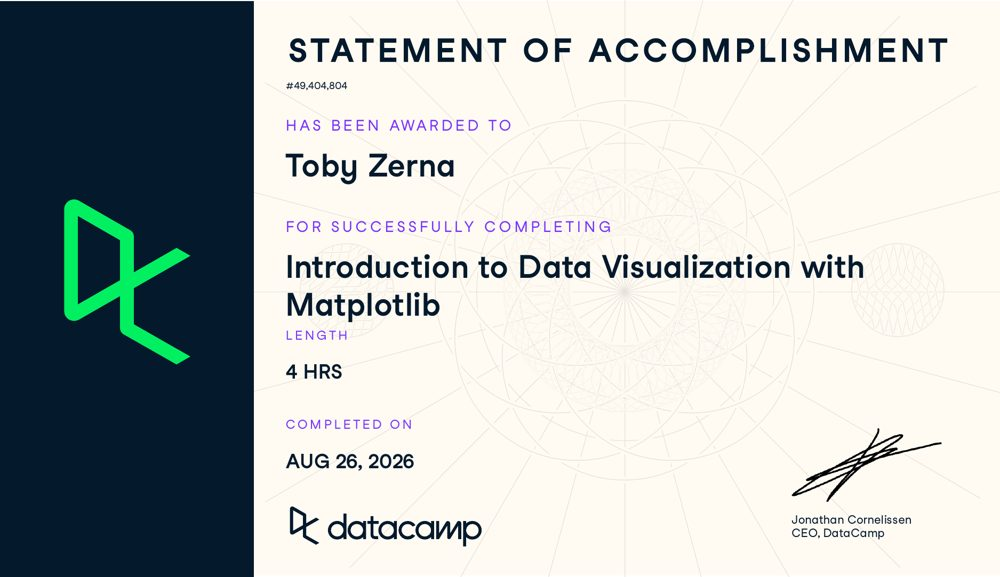
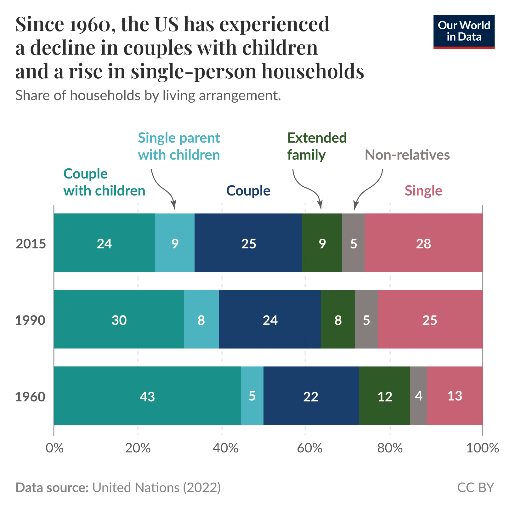
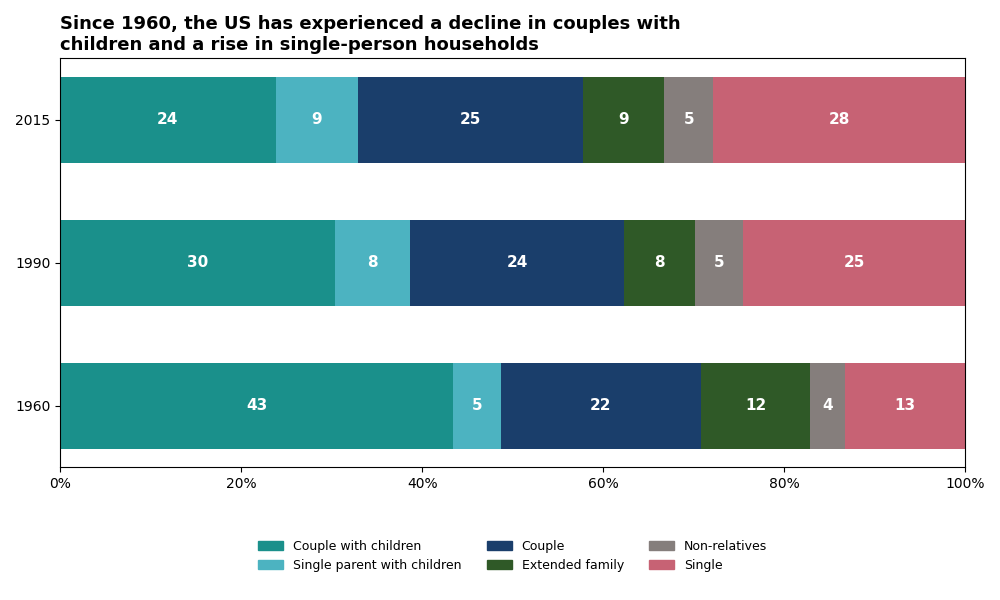
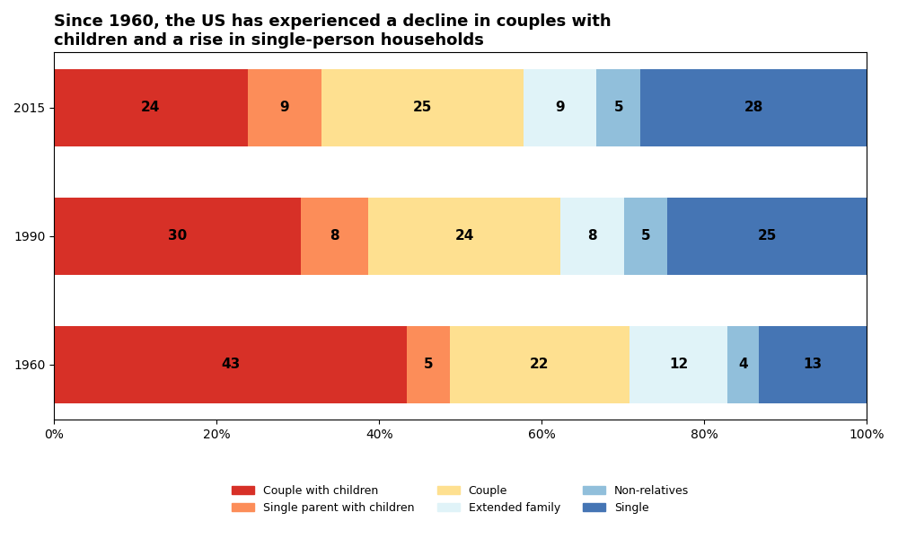

Posted August 28th, 2026

The objective of this exercise was to select a published visualisation from HowMuch.net, track down the original data source behind it, and critically evaluate the accuracy and quality of both the underlying data and the design choices used to present it.
The chosen visualisation, "Visualizing the Richest Cities in the US," is sourced from a U.S. Bureau of Economic Analysis report on gross domestic product by metropolitan area.
| Variable | Unit | Level of Measurement |
|---|---|---|
| Metro area | City name | Qualitative — Nominal (fixed label, no order) |
| GDP | US Dollars | Quantitative — Continuous |
| Rank (Top 10 list) | Position 1–10 | Quantitative — Ordinal (orders cities without showing size of difference) |
There is strong alignment between the question and the data. The question being asked is which US metro areas contribute the most to national economic output. The data from the Bureau of Economic Analysis answers this directly, by listing the GDP of each US metro area.
There are a few discrepancies with the source of this data. The visualisation states that the data is from 2018, however the last time this data was collected on the bea.gov website was from 2017, published in September 2018. The HowMuch.net website has a link to the data at the bottom of the page, however this is also unavailable, as the page states "docs.google.com refused to connect." Going by the latest data available, there are several errors in the data and the rankings are incorrect, so it can be assumed that the exact dataset used to create this visualisation is no longer available and cannot be fully verified.
Despite the missing dataset used to create the visualisation, the quality of the source is still reputable, as the Bureau of Economic Analysis is a government agency.
Posted August 28th, 2026
A summary of the tools, languages, and platforms I'm developing skills in and the certifications I've completed to support them.
Completed as part of Module 4's required training, using Python as my chosen tool.


Posted August 28th, 2026

Since 1960, the US has experienced a decline in couples with children and a rise in single-person households. The visualisation I chose to reproduce, "Solo Living Has Become the Most Common Arrangement for Households in the United States" (Samborska, 2025), consists of three bar charts showing the share of US households by living arrangement type in 1960, 1990 and 2015. The task involved an exact reproduction of the original, followed by a reconstruction using an alternative, colourblind-friendly colour scale.
| Title | Since 1960, the US has experienced a decline in couples with children and a rise in single-person households. |
|---|---|
| Summary | The visualisation consists of three bar charts showing the share of US households by living arrangement type in 1960, 1990 and 2015, showing a decline in couples with children and a rise in single-person households. |
| Source | United Nations, Department of Economic and Social Affairs, Population Division. (n.d.). Households and living arrangements data. Retrieved 26 August 2026, from https://www.un.org/development/desa/pd/data/households-and-living-arrangements-data |
| Mapping |
|
| Important notes |
|
| Access | Data can be downloaded directly at https://www.un.org/development/desa/pd/data/household-size-and-composition |
My reproduction of the master visualisation, replicating the original's structure and exact colour codes as closely as possible.

The same visualisation, reconstructed using a colourblind-friendly colour scale.

This new colour scale was chosen to make the visualisation more accessible to people with red and green colour-blindness. Pilestone.com's colour-blindness simulator was used to test the current colours and new colours, and the new colours were a lot easier to differentiate. They were chosen from ColorBrewer, so they're already colourblind friendly. The new colours also give the visualisation some direction, as family-oriented groups are a warm red and independent households are a cold blue.